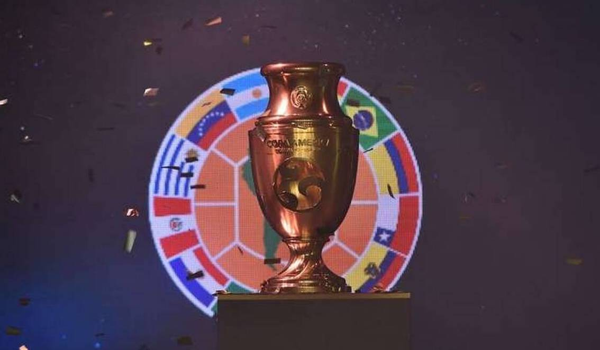
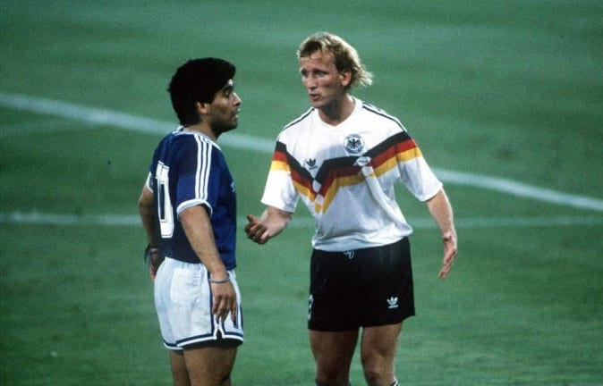
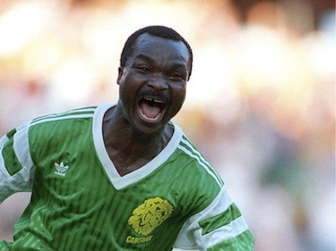

International football data
Here is a brief chronological history
of international football
from its beginnings
to the present days.
Go to Data Visualization
Scroll down for history
Here is a brief chronological history
of international football
from its beginnings
to the present days.
As we will see, the evolution of football has been a step-by-step process, starting out very centralised in the United Kingdom, then democratising in South America and Europe and then on the other continents.

The more a team plays, the more goals it will score, this evolution is correlated to the other but different. A team can play a lot of matches without scoring or play few matches and being very productive...

At that time it was a mixture of several "games" characterized by their violence and lack of rules. It was at the beginning of the 19th century that English schools integrated sports into their education programs and encouraged its formalization. In October 1848, the Cambridge Rules were a first attempt to unify the football rules. While the first independent clubs appeared in the 1860s, first international football match took place during the 1870s.
November 30th 1972 was the beginning of international matches. It opposed Scotland and England and occurred in Glasgow. The score at the end of the match was 0-0. Before this fixture, others took place in the early 1870s, opposing the same teams, but were not official.
The first 5 games were again between England and Scotland. Until 1900, matches were mainly played on British territories. Out of the 127 matches played during this period, only 6 countries participated: England, Scotland, Wales, Northern Ireland, United States and Canada. Especially the first 4 which were opposed to each other more often, especially during the oldest official tournament: the British Championship.
Rules were not as strict as they are today...
The first Olympic Games of the 20th century were hosted in Paris in 1900. It was during this edition, the second of the modern Olympic Games, that football made its debut.

England was the winner of the tournament, followed by France. At that time and until 1984, participating teams were amateur teams and from the 1992 Barcelona Olympic Games onwards, only players under 23 were allowed to play, with a maximum of 3 players above this limit.
New tournaments appeared during this period: the Copa Lipton, Newton, Premio Honor Argentino, Premio Honor Uruguayo, Roca, or the Copa Chevallier Boutell are minor cups that took place in South America. But a major cup was also created during this period: the famous and still present Copa America.
The first edition took place in Argentina in 1916. The best, second and third teams respectively were Uruguay, Argentina and Brazil.
The International Federation of Association Football (FIFA) founded in 1904, is responsible for governing and developing football worldwide with the help of the six continental confederations: UEFA for Europe, CONCACAF and CONMEBOL for North and South America respectively, CAF for Africa, and AFC

and OFC for Asia and Oceania. With these new entities, football grew from 6 international teams in 1900 to 64 in 1930. Among these teams, the ones that played the most were Argentina, Sweden and Hungary, with 146, 131 and 128 matches respectively. These same teams also won the most games (resp. 74, 62, 64) and scored the most goals over the period, resp. 273, 349 and 327.
FIFA entrusted the organisation of the 1st World Cup edition in 1930 to Uruguay. 13 countries took part in this edition, mostly South American teams and only 4 European countries since many teams did not want to make the crossing by boat. The first final was played between Argentina and Uruguay, and the latter won 4-2, making South America's domination of football at that time.
The 2nd World Cup occurred in Italy. In a tense political context, the tournament became a powerful political propaganda tool for fascist Italy, who won the trophy. In this edition, 16 nations participated and for the same reasons as before, many South American teams, including the current champion, did not participate.
In 1938 it was France that organized the World Cup. At the dawn of the World War II, many nations did not take part in the competition (only 15 for this edition). Italy kept its title.
Until 1950, World Cups are cancelled. Despite the political conflicts, football grew and 39 new national teams has been created. Despite the context, teams that have played the most are European, with Switzerland in 3rd place with 128 matches in 20 years, behind Hungary and Sweden. Among the teams with the most victories, the most successful are Argentina, Italy and England with 69%, 66% and 61% of victories. Not far behind are Germany and Brazil (59% of victories), while Sweden and Hungary are in a slight decline.
In 1950, Brazil hosted its first World Cup (13 teams) but was defeated in final by Uruguay in the legendary Maracanã stadium, which hosted more than 200K supporters for the occasion.
The 5th World Cup took place in Switzerland in 1954. It gathered 16 teams and Ferenc Puskás' Hungary was finally beaten by West Germany. This competition was a new media era: the first television viewers were able to follow eight matches live.
The 1958 edition took place in Sweden, but it was a young Brazilian, Pelé, who made a memorable appearance. He was the youngest player to lift the trophy and that didn't stop him from scoring multiple times for his country, including three goals in the semi-final against Raymond Kopa's France team. Football will not be the same after his genius has been expressed.
In 1962, it was in Chile where Brazil left their mark. Despite Pele's injury in the opening match, his teammates won 3-1 against Czechoslovakia. In Mexico in 1970, it was strikers who triumphed, scoring an average of 2.97 goals per game, the highest in World Cup history. This edition was also highlighted by Gerd Muller's ten goals, including two hat-tricks, and the absence of red cards throughout the whole competition. But in the end Brazil won again, once more thanks to Pele, by beating Italy 4-1.


The Union of European Football Associations (UEFA) was founded in 1954 in Basel. Its role is to manage and develop football at continental level under the supervision of the FIFA. In 1960, the European Football Championship was created, and it is still the second most important competition today. With this new competition and the establishment of a continental club cup, Europe became once again the most prominent region in football world and began to attract South American superstars in the early 1970s.
In 1966, the World Cup was held in England. During an exhibition in London, the cup was stolen but a dog found it in a bush in the south of London. Pele was injured again during this edition, but this time his teammates did not succeed. The Portuguese Eusebio will be the talk of the town, although his team will be beaten by Bobby Charlton's England at home, in the famous Wembley Stadium.
With the introduction of total football, West Germany won their second trophy on home soil, beating the Netherlands, led by Johan Cruyff.

The host country wins the competition. The Netherlands lost in the final four years later against Argentina and their famous striker Mario Kempes.
First edition with 24 teams. In Spain, during the France-Kuwait match, an Emir of Kuwait comes down on the field to cancel a goal, a first in history. Italy won the cup at the famous Santiago Bernabéu Stadium in Madrid, 3 goals to 1 against Germany.

This edition in Mexico is highlighted by Diego Maradona. In the quarter-final against England, he scored a famous goal with his hand, known as "La Mano di Dio", and a memorable goal dribbling the entire English defense. Its team, Argentina, won the cup against Germany.

The 1990 World Cup was held in Italy. Very few people could predict the Cameroonians that they would be the heroes of a World Cup. At the age of 38, Roger Milla was recalled by his national team and scored four goals during the final phase. Germany, after having defeated the Netherlands in the Round of 16 and England in the semi-finals, took their revenge on the Argentinians who had beaten them four years earlier.
It was a World Cup with a lot of goals, 141 exactly, which ended with a game where there were too few goals, ending on penalties. Brazil lift the trophy they love after many years.
Alongside the iconic players, Roger Milla becomes the oldest goalscorer in World Cup history at the age of 42, while Diego Maradona, who tested positive for ephedrine, comes out of the World Cup humiliated.
In 1998, very few Brazilians knew Zinedine Zidane, the magician. Two goals with his head, he turned France into a multicultural celebration they had not anticipated. Emmanuel Petit completed the job with a last-minute goal. France completes the list of countries that hosted the World Cup and won it on home soil. Note that this was the first edition with 32 teams.

After this World Cup, football will take a decisive turn and will become drastically more professional: a new era in the 21st century that we can call Modern Football.
The start of the new millennium marks the definitive internationalisation of football, with few Brazilian or Argentinian players staying to play in their own countries. Money is playing a big part in these movements: European football now has a lot of funds at its disposal, such as Zidane's €75m transfer in 2001. Furthermore, 3,000 more international matches have been played compared to the last decade. In 10 years, almost 9,000 matches are held.
In 2002 and for the first time in the history of the World Cup, two countries, South Korea and Japan, co-hosted the event. South Korea shone through to the semi-finals, becoming the first Asian nation to reach this level. Brazil beat Germany 2-0 in the final, thanks to their new striker Ronaldo, who scored 8 goals in the tournament.
Brazil team still impressed with its international stars, such as Ronaldo, Ronaldinho, Kaka and Roberto Carlos, but was stopped by the ageing but still talented France team. This 2006 edition is marked by Zidane's expulsion in the final, which left the Italians to win after a thrilling penalty session.
Tiki-taka is a game style characterized by the continuous movement of the ball around a series of quick passes. This style is particularly typical of the Spanish game in 2010. Full of talent, the Spanish team dominates the World Cup by scoring only 7 goals: simplicity and efficiency.
Since 2006, European domination has been obvious, but in 2014, football return to these lands in Brazil for a World Cup. Unfortunately the Seleçao is humiliated at home in semi-finals: 1-7 for Germany who will win the cup 5 days later against Messi’s Argentina team. Brazil is in tears.

In 2009, transfer prices soared, with the Portuguese Ronaldo being transferred for €94m. From that moment on, football enters a new dimension, TV rights bring a lot of money to European clubs, and players' salaries boom. In 2017, Brazilian Neymar is transferred for €222m and Argentinian Messi has a salary of €60m per year, excluding bonuses. These players cost a lot but also make a lot of money thanks to the diffusion of their image.

The 21st edition took place in Russia. It was the first one with video-assisted refereeing. It was characterised by the absence of Italy, by the elimination of the five African teams and Germany, the defending champions, in the group stages. Spain were surprisingly eliminated by Russia in the Round of 16 and Brazil in the quarter-final against Belgium. France earned their second star by beating the unexpected Croatia in the final.